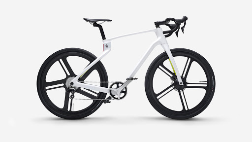

Composite project
Composite behavior program (2020) capable of predicting on- and off-axis stresses (bending, axial, torsional, shear, residual) and strains on all layers of laminate and can determine optimal design for given load case. Use of Tsai-Wu Quadratic, Hashin and Maximum Stress Failure Criteria. Program was successfully applied to bicycle load case (see above) in addition to others.